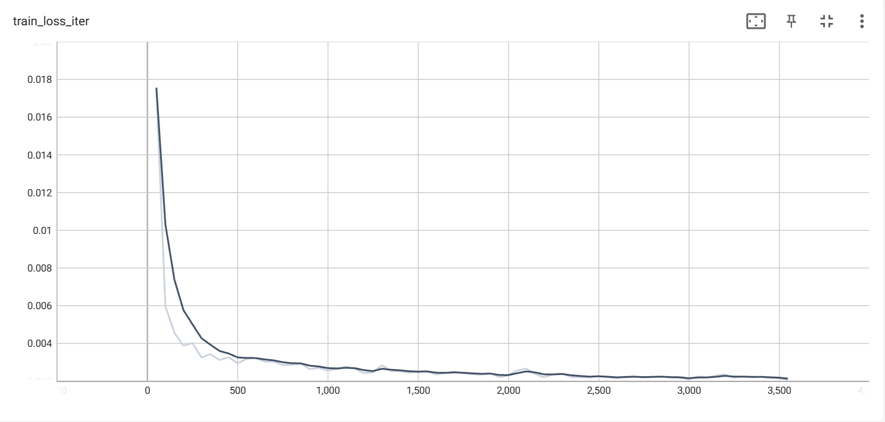
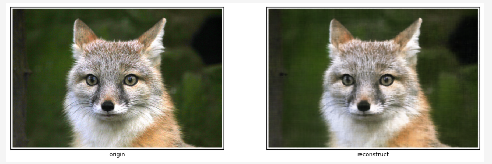
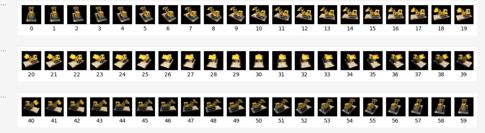

Experiment: Neural Radiance Field
Name: Yuanteng Chen
ID: 3039725444
1.Experiment Report
Part1: Fit a Neural Field to a 2D Image
1.1 Build the Network
Here I use torchsummary to check to MLP model:
1.2 Hyperparameters Chosen for Training
(1) learning_rate: 0.01
(2) batch_size: 10k
(3) loss_fn: MSE
(4) optimizer: Adam
(5) scheduler: ReduceLROnPlateau
(6) val metrics: PSNR
1.3 Train processing
Train the MLP in 50 epochs:
(1) train loss in iterations:

(2) train and val loss in epochs:
(3) PSNR (compute PSNR in whole image)
1.4 Show results:
Here I show the reconstruct result after epoch1,2,3,4 and 50(final results):

epoch 3
Compare the epoch50 result with raw image: (PSNR = 26.74)

1.5 Try to reconstruct another image with same model:
Here I only show the PSNR of image during training. (train_loss and val_loss can be viewed in logs/part1)
Reconstruct result after epoch1,2,3,4 and 50(final results):
Compare the epoch50 result with raw image: (PSNR = 35.68)
Part2: Fit a Neural Radiance Field from Multi-view Images
2.1 Create Rays from Cameras
This part is mainly about some mathematical operations in numpy, I just followed
the instructions in webpage. (more details can be checked in code.ipynb)
2.2-3 Sampling and visualizing the results
batch_size: 10k
n_samples: 64
near: 2.0
far: 6.0
In sampling, I chose to flatten all pixels from all images and do a
global sampling once to get batch_size rays from all images.
Below, I have separately presented the sampling results with perturbation added in the training mode
and the sampling results with uniform sampling in the inference mode. By combining the zoomed-in images,
the effect of perturbation can be observed.
(1) 100 rays samples with perturb: (during training)

perturb samples
(2) 100 rays samples without perturb: (during inference)
2.4 Build the Network:
Use torchsummary to check to MLP_3D model:
2.5 Hyperparameters Chosen for Training
(1) learning_rate: 0.01
(2) batch_size: 10k
(3) n_samples: 64
(4) loss_fn: MSE
(5) optimizer: Adam
(6) scheduler: ReduceLROnPlateau
(7) perturb: True
(8) val metrics: PSNR
2.6 Train processing
Train the MLP_3D in 30 epochs:
(1) train loss in iterations:
(2) train and val loss in epochs:
(3) PSNR (compute PSNR in whole image)
(I forgot to pass param epoch to SummaryWriter, so psnr wasn't recorded in tensorboard...)
2.7 Show the render results
(1) Compare the predict results with ground truth in "images_val":
(2) Some middle results on val dataset during training:

(3) predict on images_test:

Some details:
[1] No.17 in test dataset:

[2] No.37 in test dataset:
(3) spherical rendering of the lego video:
(If gif is not played in loop due to some reasons, please refresh the webpage to play it again)